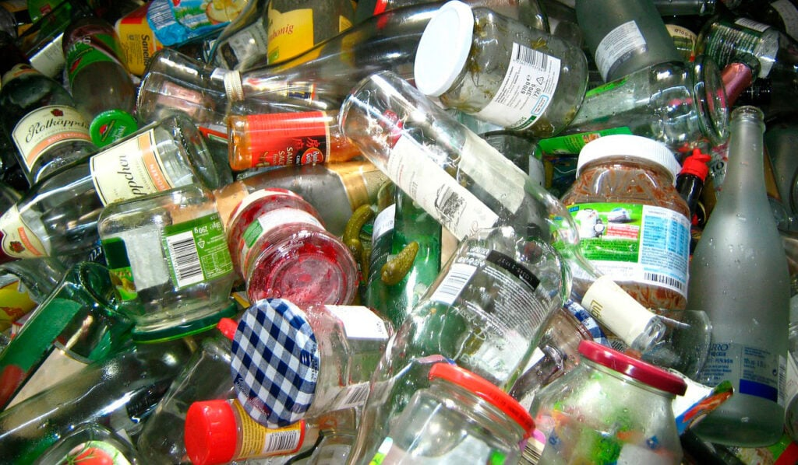
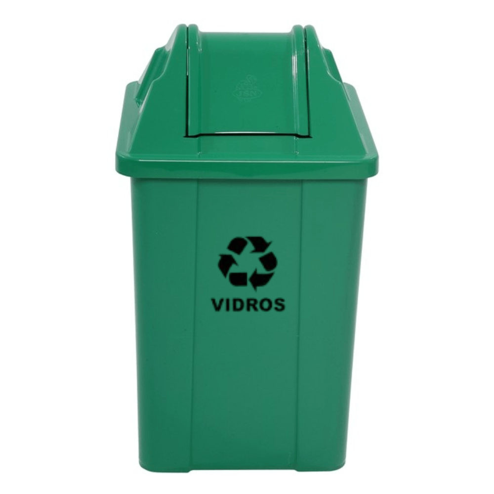

Reciclagem de Vidro
O vidro é 100% reciclável e pode ser reutilizado várias vezes sem perder qualidade. Saber como separar e descartar corretamente faz toda a diferença.
Processo de Reciclagem
- Coleta e triagem dos vidros
- Remoção de impurezas e tampas
- Quebra e trituração do vidro
- Fusão em fornos para fabricação de novos produtos
- Resfriamento e moldagem dos vidros reciclados
Recicláveis
- Garrafa de vidro (cerveja, vinho, sucos)
- Potes e frascos de vidro limpos
- Vidro plano (janelas, espelhos - em alguns locais)
- Frascos de perfumes e cosméticos
- Lâmpadas de vidro (algumas são recicláveis)
Não Recicláveis
- Vidros temperados (como de carros e portas)
- Vidro laminado
- Espelhos com camada metálica
- Cristais e porcelanas
- Vidro sujo ou contaminado com resíduos químicos
Dicas Práticas

Preparação
Lave os vidros para remover resíduos, retire tampas e rótulos quando possível para facilitar a reciclagem.
Armazenamento
Guarde os vidros em locais seguros para evitar acidentes e quebras antes da coleta.

Descarte
Utilize pontos de coleta seletiva e cooperativas para garantir o destino correto dos vidros recicláveis.
Impacto Ambiental
Reciclar vidro economiza energia e reduz a extração de matérias-primas, além de diminuir a quantidade de lixo nos aterros.
- Redução do consumo de areia, soda cáustica e calcário
- Menos emissão de gases poluentes
- Diminuição do volume de resíduos sólidos
- Preservação dos recursos naturais